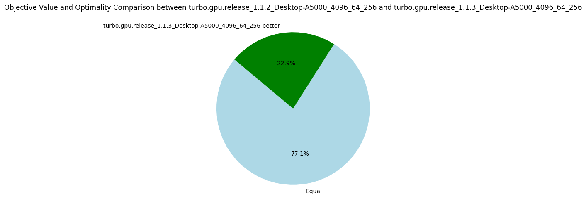

v1.1.3: Warp Synchronization
07 March 2024. By synchronizing the warps in the fixpoint loop, we increase by 13% the number of nodes per second.
And by doing some CUDA magic tricks, we just added a single line of code!
In Turbo, the propagators are called "refinement operators" and are essentially monotone function over a lattice structure, we will use both terms interchangeably.
For instance, the octagon abstract domain consists of many small refinement operators implementing the Floyd-Warshall shortest path algorithm.
We compute the fixpoint of the refinement operators over the abstract domain a in a loop.
For the curious, the loop in version 1.1.2 is implemented as:
for(size_t i = 1; changed[(i-1)%3] && !is_top[(i-1)%3]; ++i) {
size_t n = a.num_refinements();
for (size_t t = group.thread_rank(); t < n; t += group.num_threads()) {
a.refine(t, changed[i%3]);
if((t-group.thread_rank()) + group.num_threads() < n) __syncwarp();
}
changed[(i+1)%3].dtell_bot(); // reinitialize changed for the next iteration.
is_top[i%3].tell(a.is_top());
is_top[i%3].tell(local::BInc{*stop});
__syncthreads();
}
While at least one refinement operator changes a and we did not reach an inconsistent state we keep going.
On each streaming multiprocessor, we have 64 processors (A5000 GPU), so we can at most execute 64 propagators in parallel at a time.
However, CUDA allows us to over-commit and to execute more threads than processors available; we usually have 256 threads called a block.
The inner loop iterates the propagators array, refining the first block (256 propagators), then the next block (256 more), etc.
A block is further divided into warps of 32 threads each.
This is important because the thread inside a warp must all execute the same instruction otherwise they will diverge.
Suppose a if c then P else Q construction, if the condition is true for 5 threads and false for 27 threads, then the warps is split into two parts and each part is executed sequentially.
For the propagators, it happens quite often that 32 successive propagators are not exactly the same.
For instance, x + y <= k and x + y + z <= k would cause divergence.
Even worst is x * y <= k and x * z <= k that can diverge due to interval multiplication which is not the same depending on the signs of the intervals' bounds.
In CUDA, once threads have diverged, they are not merged back automatically.
It is only when encountering a barrier such as __syncthreads() above that they are put back together.
The optimization in version 1.1.3 is to synchronize the threads of each warp (__syncwarp()) after each iteration of the inner loop:
for (size_t t = group.thread_rank(); t < n; t += group.num_threads()) {
a.refine(t, changed[i%3]);
if((t-group.thread_rank()) + group.num_threads() < n) __syncwarp();
}
It leads to better parallelism since at each iteration we start with the full warp of 32 threads and not a warp already split by a previous iteration.
The results show the efficiency of this approach.
Interestingly, it also shows that we need more iterations to reach the fixpoint, which might be due to the fact that the propagators are running in a different order due to __syncwarp().
| Metrics | Average | Δ v1.1.2 | Median | Δ v1.1.2 |
|---|---|---|---|---|
| Nodes per seconds | 4328.83 | +13% | 1240.06 | +15% |
| Fixpoint iterations per second | 21347.57 | +26% | 6519.14 | +69% |
| Fixpoint iterations per node | 8.61 | +15% | 5.31 | +3% |
| #Problems with IDLE SMs at timeout | 9 | 8 | ||
| Propagators memory | 9.01MB | 0% | 8.08MB | 0% |
| Variables store memory | 72.29KB | 0% | 84.1KB | 0% |
| #Problems at optimality | 11 | 11 | ||
| #Problems satisfiable | 22 | 22 | ||
| #Problems unknown | 2 | 2 |
There is many possible optimizations to improve the efficiency of the fixpoint loop, in particular to avoid thread divergence. I'm going next to try something very simple: to sort the propagators according to their structures, which should reduce divergence, we'll see!
On the following pie charts, we notice that this version is strictly better than all others before, which validates the usefulness of our optimizations.
